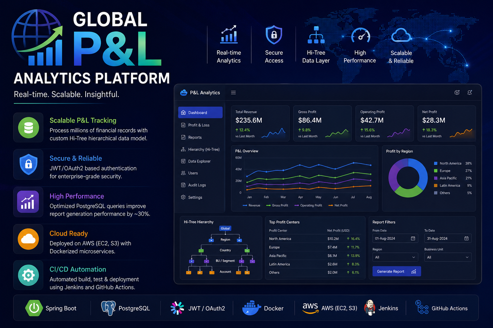
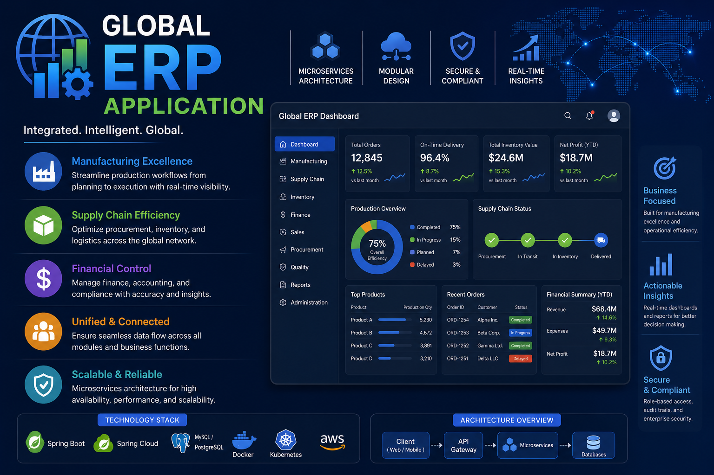
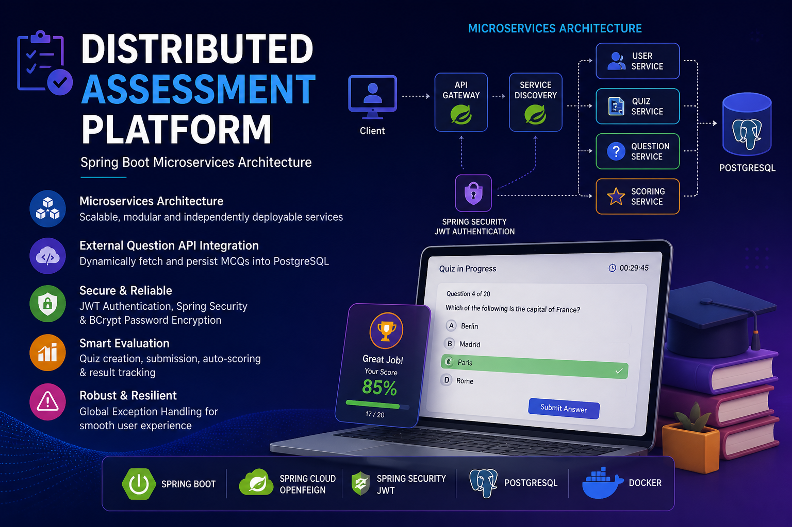

Software Engineer / Java Backend Developer
Atanu Das
I build secure, scalable backend systems with Spring Boot, PostgreSQL, microservices, Docker, AWS, and CI/CD.
About
Backend engineer focused on clarity, performance, and reliable delivery.
I work on production backend systems where clean APIs, secure access, data consistency, and deployment discipline matter. My experience includes Spring Boot REST APIs, microservices, PostgreSQL optimization, JWT/OAuth2 authentication, Docker, AWS, Jenkins, and GitHub Actions.
Experience
Professional Work
Current role at GlobalLogic, Bangalore as Software Engineer from August 2024 to present.

Work Project
Global P&L Analytics Platform
Developed Spring Boot APIs for a financial reporting platform that replaced Excel-based reporting workflows.
- Built services over large financial datasets and a custom hierarchical data layer.
- Optimized PostgreSQL queries to improve report generation by about 30%.
- Used JWT/OAuth2, Docker, AWS, Jenkins, and GitHub Actions for secure delivery.

Work Project
Global ERP Application
Engineered backend modules for a manufacturing ERP system covering production, supply chain, and finance workflows.
- Built Spring Boot microservices and delivered Kanban-related backend modules.
- Handled validation logic, requirements analysis, and release readiness.
- Supported integration testing and critical defect resolution for production stability.
Projects
Selected Self Projects
Concise project highlights with repository links for direct code review.

Microservices
Distributed Assessment Platform
Spring Boot microservices platform for quiz creation, question ingestion, scoring, and secured request flows.
Spring Boot
OpenFeign
PostgreSQL
View repository
Backend System
SkyRoute Flight Booking System
Flight booking backend with flight management, search, filtering, pagination, and seat inventory design.
Java
Spring Boot
MySQL
View repository
Model Experiment
Self Driving Car Model
Autonomous driving exploration focused on model behavior, control logic, and implementation experiments.
AI/ML
Control Logic
Simulation
View repository
Skills
Stack I use to ship backend systems.
Languages
Java, SQL
Backend
Spring Boot, Spring Security, REST APIs, Microservices, JPA, Hibernate
Database & Cloud
PostgreSQL, Docker, AWS EC2, AWS S3, Jenkins, GitHub Actions
Tools
JUnit, Git, Maven, JWT, OAuth2, CI/CD